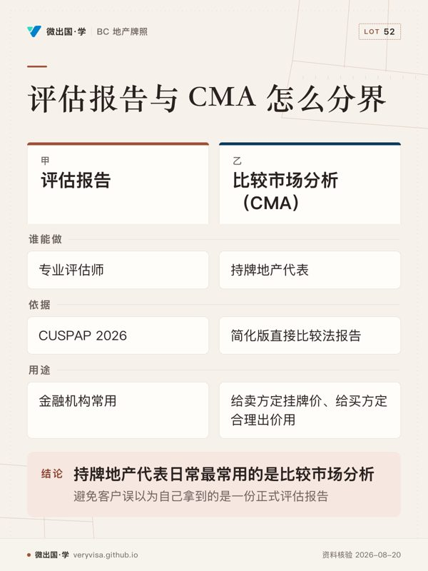

🃏 Flashcards · 3 闪卡 · 3 张 🖼 Slides · 2 幻灯 · 2 页 ✍️ Questions · 11 刷题 · 11 道
估价与财务报表 valuation P2 稳住 P2 Hold steady
ZH EN ZH + EN
先看这一章怎么考 First, how this chapter is tested
概念分拣题：题干给一个价钱或一句客户的问话，要你判断它是底价、天花板价、交换价值、业主价值、市场价值还是投资价值。真正考的是这几个词不能互相代替。 Concept-sorting questions: the stem gives a price, or one question from a client, and you must decide whether it is the floor price, the ceiling price, value in exchange, value to the owner, market value, or investment value. What is really tested is that these words cannot stand in for one another. 方法适用题：住宅、出租型商业物业、缺少成交的特殊物业各用哪种方法；三个数字不一致时怎么收口。考的是适用场景，以及调和不是取平均，不考调整表和资本化率怎么算。 Method-fit questions: which approach is used for a house, for rented commercial property, and for a special-purpose property with few sales, and how the opinion is closed when the three figures disagree. What is tested is the setting each approach fits, and that to reconcile is not to take an average. Adjustment grids, and how a capitalization rate is calculated, are not tested. 文件定性题：几页定性比较、银行用的勾选表、征收听证用的长报告、一次法庭上的口述，要你说出这是比较市场分析还是哪一种评估报告。考的是工作范围和正式程度，不是谁更懂行。 Document-type questions: a few pages of qualitative comparison, a checkbox form used by a bank, a long report for an expropriation hearing, or an oral statement in court. You must say whether it is a comparative market analysis or which kind of appraisal report. What is tested is scope of work and formality, not who knows the field better. 最常丢分的陷阱（看到题干信号就警觉） Traps that cost the most marks (watch for the signal in the stem)
一个价回答所有问题 One price answers every question 题干同时出现最低愿卖价、最高愿买价和成交价，或客户拿着估价问值不值得买。 The stem gives, together, the lowest price the seller will accept, the highest price the buyer will pay, and the sale price, or the client holds an appraisal and asks whether it is worth buying. 调和就是平均 Reconciliation is an average 题干给出两种或三种方法的不同结论，或强调成本法看起来最精确，问最终意见怎么定。 The stem gives different conclusions from two or three approaches, or it stresses that the cost approach looks the most exact, and asks how the final opinion is set. 合并后要牌照 A licence is required after the merger 题干出现监管合并、谁可以自称评估师、被协会开除，或问 BC 做评估要不要牌照。 The stem mentions the regulatory merger, who may call themselves an appraiser, expulsion by the association, or whether appraisal work in BC needs a licence. 本章考点页：导图、要点表、7 道带逐项解析的练习 →
本章地位 ：估价三章（ch21–ch23）的开篇，讲原理与边界 ——估价是什么、为什么需要专家、
谁能做估价、怎么定义"值多少钱"、估价流程的七个步骤、三大估价方法长什么样、
评估报告和持牌人常做的比较市场分析（Comparative Market Analysis, CMA）差在哪里、
出具估价意见要担什么法律责任。三大估价法的具体算法 （直接比较法、收益法的详细计算）
在 ch22/ch23 展开，本篇只讲清楚它们的适用场景与相互关系。
核实日期：2026-09-05 ，出处见文末源表。
一、估价是什么：从"猜"到"有理有据的意见" 本节回答 This section answers 定稿前要标明不是结论 Before it is final, mark that it is not the conclusion
估价（appraisal） 不是一个事实认定，是一个专家意见 ——对不动产价值的一种看法，
必须用具体金额、数值区间，或者一种关系（不高于/不低于某个数）来表达。
估价报告（appraisal report） 是这个意见的最终书面或口头传达，一旦签字或做出最终陈述，
就是"定稿"；定稿之前给客户看的所有沟通都必须清楚标明"这不是最终结论"。
估价师（appraiser） 被期待的标准是：独立、公正、客观 地完成估价工作。
这个标准不只适用于收费的专业评估师，持牌地产代表在协助买卖交易时提供的估价意见同样要达到这个标准 ——
这是本章第七节法律责任部分反复出现的一条主线：意见可以是主观判断出来的，
但一旦你以专业身份说出口，责任就跟着来了。
为什么这件事需要专家，而不是买卖双方自己估算？ 考试口径给出四条理由，核心都在
"不动产的信息流天生比股票市场差"：
成交频率低 ：一栋房子几年才卖一次，能参考的数据点稀少，不像股票每天都在成交报价；每宗物业都独一无二 ：地段、格局、状况的组合各不相同，很难标准化比较；耐久、反应慢 ：房子盖起来就是几十年，市场跌了你也没法马上"退货"，需要专业判断跨周期怎么看；市场是地方性的 ：不动产钉死在一个位置，会被周边的外部性（externality） 影响——
街对面新建一个公园是正外部性，隔壁开一间有毒气味的工厂是负外部性。
对比一下股票市场：成交频繁、全国甚至全球流通、同一家公司的股票彼此完全同质、
单笔买卖决策的重要性通常也低于一次地产交易——这就是股票交易几乎不需要"估价师"、
不动产交易却离不开的根本原因。
ℹ️
制度设计上，"意见"和"事实"是两种完全不同的责任形态
法律不会因为估价师判断错误就自动认定他有过错——估价从头到尾就是一种带主观成分的专业意见 ，
允许存在合理误差。但"允许误差"不等于"不担责"：一旦这份意见没有达到同行业合理专业水准
（所谓"reasonable appraiser test"，本章第七节展开），责任照样落到估价师头上。
这条制度设计贯穿全章：意见给的是自由，专业水准给的是约束。
节末检索小测 · 先别往回翻，凭记忆作答 Quick recall check: answer from memory before scrolling back
A licensee is still checking sales and emails the seller a value figure. Nothing has been signed, and the email does not say whether the figure is final. What does the course require at that moment?
持牌人还在核对成交，就用电子邮件给卖家一个价值数字。没有任何文件签署，邮件也没说这个数字是不是最终结论。此刻课程要求什么？
a Treat the email as a finished appraisal, because any number sent to a client is final once it is typed. ✗ 定稿发生在签字或作出最终陈述之时。一封还在核对成交的邮件，不会因为写了数字就自动成为估价报告（appraisal report）。漏掉「这不是最终结论」，才是这里的问题。 The opinion is final when it is signed or when a final statement is made. An email that is still checking sales does not become an appraisal report just because a number was typed. The problem here is leaving out the statement that this is not the final conclusion.
b Leave the message as a hunch, with no amount, no range, and no relationship such as not above a figure. ✗ 估价（appraisal）必须用具体金额、数值区间，或者不高于、不低于某个数的关系来表达。把它留成没有形态的猜测，就还不是课程所说的估价意见。 An appraisal must be stated as a specific amount, a numerical range, or a relationship such as not above or not below a figure. Left as a formless guess, it is not yet the appraisal opinion the course describes.
c Say in the email that the figure is not the final conclusion, until the opinion is signed or finally stated. ✓ 定稿之前的一切沟通都必须标明这不是最终结论。意见一旦签字或作出最终陈述，才是估价报告（appraisal report）。持牌人协助交易时说出的意见，同样要达到独立、公正、客观的标准。 Every communication before the opinion is final must say that this is not the final conclusion. The opinion is an appraisal report only once it is signed or finally stated. An opinion a licensee gives while assisting a transaction must meet the same standard of independence, impartiality, and objectivity.
d Apply independence and objectivity only when a fee appraiser writes the email, not when a licensee does. ✗ 独立、公正、客观并不只约束收费的专业评估师。持牌地产代表在协助买卖时提供的估价意见，要达到同一个标准。身份不同，取消不了这封邮件上的标明义务。 Independence, impartiality, and objectivity do not bind only a fee appraiser. An appraisal opinion a licensed real estate representative gives while assisting a purchase or a sale must meet the same standard. A different role does not remove the duty to mark that statement on this email.
看答案与每个选项的解析 Show the answer and why each option is right or wrong 答案 Answer ：c
二、谁能做估价：BC 的牌照豁免与行业自律 本节回答 This section answers 两种资格各管哪类物业 Which property types each of the two designations covers 本章考题 4 Question 4
多数省份不强制评估师持牌 ，BC 正是其中之一——理论上任何人都可以自称"评估师"、
收费出具估价意见。这一点2026 年现行依旧成立 ，而且比想象的更稳定：
BC 对评估师的牌照豁免条款，写在《Real Estate Services Regulation》（B.C. Reg. 506/2004）
s.2.8「Exemption for appraisers and property inspectors」 ——这条豁免的条号本身从未变过 ，
现行整合本（current to 2026-10-27）原文是：
"A person who is providing trading services only by (a) providing an appraisal of value of real estate
and consulting services relating to the value of real estate, or (b) inspecting and reporting on the
condition of real estate is exempt from the requirement to be licensed under Part 2 of the Act if those
services are provided in the course of the person's business as an appraiser or real estate inspector."
注意最后一句限定：豁免只给以评估师或验房员为业 、且只做评估或验房的人。
也就是说，2021-08-01 RECBC 与 OSRE 合并进 BCFSA 那次监管大改革，没有动到这条豁免 ——
只是现在解释这条豁免、执行这条豁免的机构换成了 BCFSA，条文本身分毫未改。
⚠️
"监管合并了，是不是以后估价也要牌照了？"
这是读者最容易掉进去的直觉陷阱：BCFSA 把发牌、执业规则、投诉、纪律处分全部收编到一家机构，
很容易让人以为地产相关的一切工作都被纳入了强制持牌范围。事实是：评估这个领域从来不在
RESA 强制持牌的范围内，监管大合并动的是地产交易服务（trading services）的监管架构，
跟评估这件事本身完全是两码事 。2026 年 AIC（Appraisal Institute of Canada）
的自愿性认证体系与 REIBC（Real Estate Institute of BC）仍然各自独立运作，
都不是政府发牌机构。
BC 的评估行业靠行业自律 组织出的自律：AIC （Appraisal Institute of Canada）
授予 AACI® （Accredited Appraiser Canadian Institute，可以做住宅、商业、农业、
机器设备等全品类评估）与 CRA® （Canadian Residential Appraiser，专精不超过四户的
住宅物业）两个设计资格，2026 年官网确认这两个称号仍配一枚统一的 P. App.®
（Professional Appraiser）专业认证标记一起授予（考试口径©2020 只提 AACI/CRA 两个名字，
没提到 P. App. 这枚标记，算是一处考试口径没跟上的细节，但不影响考点）；
另有 REIBC （Real Estate Institute of BC）发的 RI 资格，面向地产行业各个岗位而不限于评估师。
这些协会的约束力止步于"开除会籍"——被开除并不妨碍这个人继续以"评估师"身份接单，
这一点考试口径原文讲得很直白，2026 年依旧成立。
但没有牌照要求，不等于持牌地产代表可以随便钻这条豁免的空子。 这是考试口径完全没提到、
却是柜台上最容易问出来的一个边界问题：
✕
已经是持牌地产代表，能不能自己单干评估或验房业务？
不能直接单干。 BCFSA 2024-10-22 的官方说明写得很清楚：s.2.8 这条豁免只对本来就不是
RESA 持牌人的人开放 。《Real Estate Services Act》s.2 规定，已经持牌的人不能反过来
援引这条豁免自己单干——如果一名持牌地产代表想提供评估或验房服务，必须以所属经纪公司的名义
提供，报酬也必须先付给经纪公司，再由经纪公司结算给他 ；他也可以选择干脆放弃牌照，
转行做独立评估师或验房员。卷面 上考"BC 对评估师有没有牌照要求"，答案仍然是"一般没有"；
实务 上如果客户问"我认识的这位持牌经纪能不能私下帮我做一份正式估价、直接付他现金"，
正确答案是"不行，除非通过他的经纪公司具名开单"——私下收费是拿豁免条款给自己的持牌身份
违规操作找借口，一旦被查是纪律处分的把柄。
节末检索小测 · 先别往回翻，凭记忆作答 Quick recall check: answer from memory before scrolling back
On the licensing exam, which pairing of the two appraisal designations matches the course?
按发牌考试的口径，两种评估设计资格的哪一种对应是对的？
a The residential designation covers farms and machinery, and the other designation covers company shares only. ✗ 全品类那一个才包括住宅、商业、农业和机器设备。专精住宅的资格不管公司股份，也不把农场和机器设备收进自己的范围。两个名字对调，就是这道题的陷阱。 Only the all-property designation includes residential, commercial, agricultural, and machinery and equipment. The residential designation does not cover company shares, and it does not take farms and machinery into its own scope. Swapping the two names is the trap on this question.
b One covers every property type; the residential one is limited to homes of not more than four units. ✓ 考试口径里，AACI 可以做住宅、商业、农业、机器设备等全品类，CRA 专精不超过四户的住宅。现行会把一枚统一的专业认证标记和这两个资格一起授予，卷面不要求用那枚标记代替这两个名字。 On the exam, AACI may cover every property type, including residential, commercial, agricultural, and machinery and equipment. CRA specializes in homes of not more than four units. Current practice also grants one unified professional mark together with these two designations. The exam does not require that mark to be used in place of the two names.
c A trading-services licensee may rely on the appraiser exemption and have the client pay that licensee directly. ✗ 卷面问的是评估师一般要不要牌照，答案是一般不要。现行规则多了一层：已经持牌的人不能援引 s.2.8 私下单干，必须经所属经纪公司具名，报酬先付给经纪公司，或者放弃牌照。 The exam asks whether appraisers generally need a licence, and the answer is that they generally do not. The current rule adds a further layer: a person who already holds a licence cannot rely on s.2.8 to work privately. The work must be in the name of the brokerage the person belongs to, and the fee must be paid to the brokerage first, or the person must give up the licence.
d The exam now uses one newer professional mark, and the two designation names are no longer the exam terms. ✗ 考试口径只写 AACI 和 CRA 两个名字。现行一并授予的专业认证标记是课程没写成卷面答案的细节，不能拿来替换这两个设计资格。 The exam text names only AACI and CRA. The professional mark now granted together with them is a detail the course did not write as the exam answer. It cannot replace these two designations.
看答案与每个选项的解析 Show the answer and why each option is right or wrong 答案 Answer ：b
三、"值多少钱"其实是三个不同的问题 本节回答 This section answers 卷面的市场价值要件 The market-value elements on the exam 本章考题 1 Question 1
买卖双方谈价钱的时候，脑子里其实同时转着三个不一样的数字，估价师的工作就是把它们分清楚：
底价（floor price） ：卖家愿意接受的最低金额；天花板价（ceiling price） ：买家愿意支付的最高金额；交换价值（value in exchange） ：双方最终谈成的成交价——必须落在底价与天花板价之间，
交易才可能发生 。
情景 1 ：陈太太的底价是 $620,000，李先生的天花板价是 $655,000。经过几轮报价，
双方在 $635,000 成交——这个 $635,000 就是交换价值。双方彼此都不知道对方真正的底线，
这正是"谈判"存在的理由；如果房子迟迟卖不掉，往往是卖家的底价定得比市场上所有潜在买家的
天花板价都高。
底价与天花板价合在一起叫"业主价值"（value to the owner） ——高度主观，
带着个人的税务状况、资金压力、感情因素，估价师通常不擅长、也不负责去估算这个。
估价师擅长的是客观价值（objective value） ：基于市场证据和公认估价技术得出的结论，
能经得起第三方审查。客观价值里最常见的一种就是市场价值（market value） ——
估价师日常工作里 90% 以上都在估这个。
市场价值的通用定义 （引自 CUSPAP）大意是：在指定日期、经过充分市场曝光后，
买卖双方都审慎知情、不受任何不当压力，公平交易情况下最可能达成的价格。
这份定义每两年会随 CUSPAP 改版重新措辞 ——AIC 官网现行版本是
CUSPAP 2026（2026-04-01 生效） ，市场价值定义现行原文是：
"The most probable price...for which the specified property rights should sell after reasonable
exposure in a competitive market under all conditions requisite to a fair sale, with the buyer and
the seller each acting prudently, knowledgeably, and for self-interest, and assuming that neither
is under undue duress."
核心概念（公平交易、买卖双方审慎知情、无不当压力）和考试口径援引的旧版说的是同一件事，
只是措辞按新版重新写过，而且新版把"曝光"进一步拆成两个方向：曝光期（Exposure Time）
是向后看——这套定价条件下，这栋房子理论上需要多久才能卖出去；营销期（Marketing Time）
是向前看——从评估日往后，预计还要挂牌多久才能真正成交。考试口径只笼统说了一句
"adequate time and exposure to the market"，没有把这两个方向分开。
ℹ️
卷面 vs 实务：市场价值定义该用哪个版本
卷面 上考"市场价值的定义要素有哪些"，答公平交易、审慎知情、无不当压力这几个核心要件即可，
考试口径援引的表述完全够用；实务 上给客户写正式的估价意见书或者报告引用市场价值的定义，
应当标注援引的是现行 CUSPAP 版本 （写清年份），而不是照抄考试口径上那句没有版本号的话——
版本号本身就是证明这份报告"跟得上现行专业标准"的一部分。
⚠️
估价 ≠ 判断这个价格"值不值"
估价师被要求"估这个物业能卖多少钱"和被要求"这个价格值不值得买"，是两个完全不同的问题 。
前者是市场价值，后者叫投资价值 ，属于地产投资顾问的领域，
要综合考虑买家的个人税务状况和融资能力才能回答。一个常见的误会场景：
客户拿着一份估价报告问"这套房子值不值这个价"——正确的反应是先分清他问的到底是
"市场上大概能卖多少"还是"我个人买这套划不划算"，两个问题不能用同一份市场价值结论去回答。
节末检索小测 · 先别往回翻，凭记忆作答 Quick recall check: answer from memory before scrolling back
According to the licensing exam materials, which statement belongs in the definition of market value?
按发牌考试的材料，市场价值的定义里应当包含哪一项？
a The most probable price after adequate exposure, parties prudent and informed, neither under undue pressure. ✓ 卷面的市场价值（market value）就是：指定日期、经过充分市场曝光，买卖双方审慎知情、不受不当压力，公平交易下最可能达成的价格。现行 CUSPAP 2026 把曝光拆成向后看的曝光期（Exposure Time）和向前看的营销期（Marketing Time），卷面不要求把这两个方向分开作答。 On the exam, market value is the most probable price on a specified date, after adequate market exposure, with both parties prudent and informed, under no undue pressure, in a fair transaction. Current CUSPAP 2026 splits exposure into Exposure Time, looking back, and Marketing Time, looking forward. The exam does not require the two directions to be answered as separate items.
b The seller's private minimum, because a prudent market must accept whatever floor the seller sets. ✗ 卖家不愿再低的数字是底价（floor price），不是市场价值。市场价值来自市场证据和公认技术，不由卖方单方的底线决定。这是把两个价钱合成一个。 The figure the seller will not go below is the floor price, not market value. Market value comes from market evidence and accepted technique. It is not set by the seller's limit alone. This answer folds two prices into one.
c The buyer's personal tax result, because market value and investment value share one definition. ✗ 个人税务和融资能力属于投资价值（investment value）。市场价值不回答「这个买家买得划不划算」。两个定义并在一起，客户的问题就会被答错。 Personal tax and the ability to obtain financing belong to investment value. Market value does not answer whether this buyer is getting a good deal. Folding the two definitions together answers the client's question on the wrong definition.
d Two named time periods, one looking back and one looking forward, as the required exam wording. ✗ 向后看的曝光期（Exposure Time）和向前看的营销期（Marketing Time）是现行专业标准拆出来的。考试口径只写了充分的时间与市场曝光，卷面按未拆开的核心要件作答。 Exposure Time, looking back, and Marketing Time, looking forward, are a split made by the current professional standard. The exam text states only adequate time and market exposure. On the exam, answer with the core elements before that split.
看答案与每个选项的解析 Show the answer and why each option is right or wrong 答案 Answer ：a
四、估价流程七步：从定义问题到沟通结论 本节回答 This section answers 费用不同也可以都合格 Different fees can both still be competent
图：地产估价导论——估价原理、牌照边界与七步流程
考试口径给出一套七步框架，各步骤实际操作中会相互交叉，但作为讨论顺序很实用：
定义估价问题 ——谁是客户、报告给谁看、估价目的是什么、评估日是哪一天、
要估价的是哪种产权（fee simple、租赁权益、共管产权……）、有哪些假设与限制条件；确定工作范围（scope of work） ——查勘深度、数据核实程度要与用途匹配。
一份 $100 的"路过式"估价和一份 $5,000 的征收诉讼用详尽叙述式报告，
只要都在各自约定的工作范围内如实交代，两者都可以是"合格"的估价 ；数据收集 ——一般数据（国家/省/市/社区层面的社会经济因素）与具体数据
（标的物及可比物业的产权、物理状况）；数据分析 ——研究供需、判断最高最佳用途（Highest and Best Use, HBU） ；选择合适的估价方法 ——直接比较法、收益法、成本法，见第五节；调和各方法的结论，形成最终价值意见 ；沟通结论 ——口头、表格式或叙述式报告，见第六节。
最高最佳用途（HBU） 是估价里最重要的一个判断：在合法、物理可行、财务可行、
市场支撑这四重约束下，能让这块地产生最大净回报的用途。一个简单的验证问句是：
"如果这栋楼烧掉了，市场会不会原样重建它？"——回答"会"，现有用途大概率就是最高最佳用途；
回答"不会"，这块地就带有潜在价值（latent value） ，需要单独做剩余法（residual method）
分析：先估算按新用途开发完成后的市场价值，再扣掉拆除与开发成本，剩下的余额就是这块地
按最高最佳用途计算的土地价值。
情景 2 ：一栋独立屋位于已经被公寓楼包围、且分区已改为多户住宅用途的地段，
按现有独立屋用途出租每月收 $2,400。假设按最高最佳用途开发成公寓楼后完工市场价值是
$3,200,000，拆除成本 $40,000，建造公寓楼的开发成本 $1,900,000，
剩余法算出的土地价值 ＝ $3,200,000 − $40,000 − $1,900,000 ＝ $1,260,000 ——
远高于按现状（独立屋）估算的地皮价值。这就是为什么这类"夹在两种用途之间"的地产，
持牌代表在做 CMA 时最容易低估，一旦漏了潜在价值这一层，挂牌价可能比市场实际能卖到的低一大截。
✕
别替客户算精确的剩余法或摊还数字
剩余法、直接比较法的逐项调整、收益法的资本化率，这类精确计算属于专业评估师的领域。
持牌代表的职责是帮客户理解这些概念会怎么影响他们的定价决策 ，不是替客户出具
具有专业精度的计算结果——算错一个数字、客户据此做了决定，责任由你承担（第七节详细展开）。
节末检索小测 · 先别往回翻，凭记忆作答 Quick recall check: answer from memory before scrolling back
One assignment is a drive-by opinion at the low fee used in the course example. Another is a full narrative for an expropriation case at the high fee in that same example. Both state honestly what work was done. Which can be a competent appraisal?
一份是课程举例里的低费用路过式意见，另一份是同一举例里用于征收案件的高费用叙述式报告。两份都如实写明做了哪些工作。哪一份可以是合格的估价？
a Only the narrative report, because a low fee means the opinion cannot meet a professional standard. ✗ 费用低不自动等于不合格。课程把 $100 的路过式意见和 $5,000 的叙述式报告放在一起，说明合格与否看工作范围（scope of work）有没有如实交代，不看收费高低。 A low fee does not by itself mean the work is not competent. The course places a $100 drive-by opinion beside a $5,000 narrative report to show that competence turns on whether the scope of work was stated honestly, not on how high the fee is.
b Only the drive-by opinion, because a short look is enough for a court and for a lender. ✗ 征收诉讼需要经得起盘问的详尽报告，路过式意见的工作范围对不上这个用途。短，不是对一切用途都够用。 Expropriation litigation needs a detailed report that can stand up to questioning. The scope of work of a drive-by opinion does not match that use. A short look is not enough for every use.
c Neither one, unless both use every approach and then average the results. ✗ 课程没有把三种方法都做完再取平均，写成合格的条件。工作范围可以按用途宽窄不同，调和本身也不是平均。 The course does not make it a condition of competence that all three approaches be completed and then averaged. The scope of work may be wider or narrower to match the use. To reconcile is itself not to take an average.
d Both, where each one stays inside the scope of work that was agreed and disclosed. ✓ 工作范围（scope of work）要和用途匹配。一份 $100 的路过式估价和一份 $5,000 的征收诉讼用叙述式报告，只要都在各自约定的范围内如实交代，两者都可以是合格的估价。 The scope of work must match the use. A $100 drive-by appraisal and a $5,000 narrative report for expropriation litigation can both be competent appraisals, so long as each stays inside the scope that was agreed and states honestly what was done.
看答案与每个选项的解析 Show the answer and why each option is right or wrong 答案 Answer ：d
五、三大估价方法概览（详细算法见 ch22/ch23） 本节回答 This section answers 住宅和出租物业各用何法 Which approach fits a house, and which a rented property 本章考题 2 Question 2
直接比较法（Direct Comparison Approach） ：基于替代原则 ——一处物业的价值
不应超过购买一处功用相近的替代物业的成本。用最近成交的相似物业价格倒推标的物价值，
最常用于住宅。收益法（Income Approach） ：假设市场参与者把物业价值看作未来净收益的现值，
最常用于出租型商业物业。本质上仍是靠市场证据比较，只是比的是租金与营运费用，
而不是直接比较成交价。成本法（Cost Approach） ：假设物业价值不会超过重置成本——空地价值加新建成本，
再减去建筑物折旧。理论上最"精确"，实际操作却常常是最不精确的一种，
因为建造成本和市场认可的价值经常对不上，旧建筑物的折旧也很难准确估算。
常用于缺乏市场数据的特殊物业（教堂之类）。如果三种方法算出的结论不一致，估价师要调和（reconcile） ——不是取平均数，
而是用专业判断解释哪个结论最贴近这类物业市场参与者实际的定价方式。
这三种方法的具体计算步骤、调整表怎么打分、资本化率怎么算，留到 ch22（直接比较法与成本法）
和 ch23（收益法）展开 ，本篇只需要记住：三种方法各有适用场景，且经常互相印证。
节末检索小测 · 先别往回翻，凭记忆作答 Quick recall check: answer from memory before scrolling back
Investors who buy a small rented shop compare its net income. People buying a nearby house compare recent sales of similar houses. Which pairing matches the course?
买一间小型出租商铺的投资者比的是净收益。买旁边那栋住宅的人比的是相似房子的近期成交。哪一种配对符合课程？
a Use the cost approach for the house, because a residence is never valued from similar sales. ✗ 住宅最常用的是直接比较法（Direct Comparison Approach），依据替代原则，用相似成交来倒推。成本法不是住宅的默认方法，更不能说住宅从不参考成交。 Houses are most often valued by the Direct Comparison Approach, which rests on the principle of substitution and works back from similar sales. The Cost Approach is not the default method for a house, and it is not correct to say that a house is never valued from sales.
b Use direct comparison for the shop, because an income property is valued by setting rent aside. ✗ 出租型商业物业看的是未来净收益的现值，比的是租金和营运费用，这是收益法（Income Approach）。把租金放到一边，方法就用反了。 A rented commercial property is looked at as the present value of future net income, by comparing rent and operating expenses. That is the Income Approach. Setting the rent aside uses the approach the wrong way.
c Use the income approach for the shop and the direct comparison approach for the house. ✓ 收益法（Income Approach）最常用于出租型商业物业。直接比较法（Direct Comparison Approach）基于替代原则，一处物业的价值不应超过取得功用相近替代物的成本，最常用于住宅。具体计算留在后面的章节。 The Income Approach is used most often for rented commercial property. The Direct Comparison Approach rests on the principle of substitution: the value of a property should not exceed the cost of acquiring a substitute of similar utility. It is used most often for houses. The actual calculations are left to later chapters.
d Average one figure for both properties, because they must share a single method. ✗ 两种物业的市场参与者定价方式不同，不能合成一个平均数，也不能强迫共用一种方法。方法按场景选，不一致时才调和（reconcile）。 Market participants price the two kinds of property in different ways. The two results cannot be folded into one average, and the two properties cannot be forced to share one method. The approach is chosen for the setting. Reconcile only when the conclusions disagree.
看答案与每个选项的解析 Show the answer and why each option is right or wrong 答案 Answer ：c
六、评估报告 vs CMA：柜台上怎么分界 本节回答 This section answers 旧报告先看目的和日期 On an older report, read the purpose and the date first 本章考题 3 Question 3
评估报告（appraisal report） 通常有三种呈现形式：口头 （法庭作证等场合）、
表格式 （金融机构常用，勾选框加简短说明，效率高）、叙述式 （最完整，
按估价流程逐步展开说理，常用于征收、诉讼这类需要经得起盘问的场合）。
持牌地产代表日常最常用的是一种更简化的形式——比较市场分析（Comparative Market Analysis,
CMA） ：给卖方定挂牌价、给买方定合理出价用的一份简化版直接比较法报告。
通常拿 3 到 5 个可比物业，对标的做"优于/劣于/相近"的定性判断，
而不是像专业评估师那样给出精确的加减调整金额；篇幅可以短到一到三页。
CMA 和正式评估报告最大的差别不是"谁更懂行"，是工作范围与呈现的正式程度不同 ——
CMA 通常不会像正式评估报告那样附一整页免责声明、假设条件与限制条件。
正因如此，持牌代表在出具 CMA 时必须格外小心地口头或书面向客户说明这份分析
"做到了什么、没做什么"（有没有实地查勘、有没有核实客户提供的信息），
避免客户误以为自己拿到的是一份正式评估报告。
🔧
客户拿着一份第三方评估报告来问怎么办
客户手上如果有一份为其他目的（比如再融资、遗产分割）做的旧评估报告，
持牌代表应当先弄清楚：这份报告的评估目的 和评估日 是什么。
评估目的不同，得出的价值结论未必能直接套用到"现在这笔交易该定什么价"上——
帮客户理解这一点，是把客户的预期引导到合理轨道上的关键一步。
节末检索小测 · 先别往回翻，凭记忆作答 Quick recall check: answer from memory before scrolling back
A buyer brings an appraisal prepared for a refinance and asks that its value be used, with no further question, as the price for a purchase being negotiated now. What does the course tell the licensee to clarify first?
买家拿来一份为再融资做的估价，要求不再问别的，直接把那个价值当作眼下这笔买卖的价格。课程要持牌人先弄清什么？
a Nothing further, because every appraisal states market value and therefore fits every later deal. ✗ 评估目的不同，价值结论未必能直接套到现在这笔交易。把任何一份市场价值报告都当成今天的定价，忽略了目的和评估日。 A different purpose means the value conclusion may not carry straight over to the purchase being negotiated now. Treating every market-value report as today's price leaves out the purpose and the effective date.
b The purpose of that appraisal and its effective date, because another purpose may not price this sale. ✓ 持牌人要先看这份报告的评估目的和评估日（effective date）。再融资得出的数字，不一定就是现在这笔买卖该定的价格。先把这一点讲清楚，客户的预期才落在能用的范围内。 The licensee should first look at the purpose of that appraisal and its effective date. A figure reached for a refinance is not necessarily the price this purchase should use. Stating that first keeps the client's expectation inside what the report can support.
c Only the page count, because a longer report is always the current price of the property. ✗ 篇幅长只说明呈现更完整，不能代替评估目的和评估日。叙述式报告常用于征收和诉讼，也不因此自动成为今天的挂牌价。 Length only means the presentation is more complete. It cannot stand in for the purpose or the effective date. A narrative report is often used for expropriation and for litigation, and that use does not make it today's list price.
d Whether the report was given orally, because oral reports are the format lenders use for a refinance. ✗ 口头报告多用于法庭作证。贷款机构常用的是表格式报告，勾选框加简短说明。形式对不上，也不能跳过目的和评估日。 An oral report is used mostly for testimony in court. Lenders commonly use a form report: checkboxes plus a short explanation. The format does not match, and the purpose and the effective date still cannot be skipped.
看答案与每个选项的解析 Show the answer and why each option is right or wrong 答案 Answer ：b
七、法律责任：为什么"一份意见"也能被告上法庭 本节回答 This section answers 对不上售价不等于有过错 A gap from the later sale price is not fault 本章考题 5 Question 5
估价意见虽然带主观成分，但一旦被证明没有达到同行业合理专业水准 ，
责任照样跑不掉——这条规则对持牌地产代表同样适用，不是只有专业评估师才要担责 。
判例 1（Cantwell v. Petersen, 1982, BCSC） ：评估师为贷款银行出具报告，
漏掉了房屋虫蛀与干腐的问题，买家（虽然与评估师没有合同关系）据此起诉评估师疏忽。
法院认定：评估师本应能预见买家会看到这份报告并依赖它，因此对买家同样负有注意义务
（duty of care）——没有合同关系，不代表没有责任 。
合同责任与侵权责任是两条平行的诉讼路径 ：出钱委托评估的一方（比如贷款机构）
走合同法起诉违约；没有合同关系但可以合理预见会依赖这份报告的第三方（比如借款人本人）
走侵权法起诉疏忽——这个原则源自英国案例 Hedley Byrne v. Heller ，被 BC 上诉法院在
Windsor Motors Ltd. v. District of Powell River （1969）一案里采纳：只要一方明知
对方在信赖自己的专业技能与判断给出信息，就默示承担了"认真核实、谨慎作答"的义务。
情景 3 ：某评估师为贷款机构出具报告，把一栋房子估成 $800,000，贷款机构据此
贷出八成即 $640,000。半年后借款人违约，贷款机构止赎后请两位独立评估师重新估价，
结论只有 $580,000，最终以这个价格成交，贷款机构亏损 $60,000。
贷款机构 可以用合同法 起诉评估师违约疏忽；借款人 虽然与评估师没有合同关系，
但因为可以合理预见他会依赖这份报告做决策，可以用侵权法 起诉评估师疏忽。
这两条诉讼路径互不排斥，可以同时成立。
判断评估师是否有过错，用的是"合理评估师标准" ——不是问"结果对不对"，
而是问"换作一位一般水准的同行，在同样的信息条件下会不会这样判断"。
单纯的高估或低估本身不构成过错 （Baxter v. F.W. Gapp & Co. ，1938，英国案例），
关键要看有没有合理解释——如果差距大到无法用市场波动解释，举证责任就转移到评估师身上，
要求他自己说明原因。
持牌代表出具 CMA 时适用同一个标准。 Bourne and Cox v. Martin （BC 案例）
里，一名代表把两块每块本应值约 $40,000 的十英亩地估成 $35,000 并按此挂牌，
其中一块很快以全价成交，随后转手价飙升到 $65,000。BC 最高法院认定代表没有做好
合理的估值调查，对委托人负有的估值义务未尽到——同样的法律责任标准，
适用于任何以专业身份提供估价意见的人，不管你有没有"评估师"这个头衔 。
✕
免责声明挡不住"重大疏忽"
评估师或代表可以在报告里写限制条件和免责声明来控制责任的范围 （比如声明只对
委托人负责、不对结构工程问题负责），但不能靠免责声明豁免自己应尽的专业注意义务 ——
明显的结构裂缝、异常低价却没做进一步核实，这类"显而易见却没记录"的疏漏，
免责声明救不了你。
节末检索小测 · 先别往回翻，凭记忆作答 Quick recall check: answer from memory before scrolling back
An appraisal is higher than the price in a later sale. The gap can be explained by a shift in that local market, and an ordinary appraiser with the same information could have reached the same figure. What does the course say about fault?
一份估价高于后来的成交价。这个差距可以用当地市场的变动解释，掌握同样信息的一般同行也可能得出同一个数字。课程怎么看待过错？
a The appraiser is at fault whenever a later sale price is different from the reported figure. ✗ 单纯高估或低估本身不构成过错。结果和后来的售价不同，还没有回答一般同行在同样信息下会不会这样判断。这是把结果当成过错。 A simple overestimate or underestimate is not fault by itself. A result that differs from a later sale price has not yet answered whether an ordinary peer, with the same information, would have judged the same way. This treats the result as the fault.
b A later buyer can never complain, because only the person who paid for the report may raise a duty. ✗ 这道题问的是过错，不是谁有起诉资格。只说付费的人才能主张，也不符合课程：可以合理预见会依赖报告的人，仍可能有注意义务（duty of care）。本题能成立的理由是同行在同样信息下也会得出该数字，所以差距本身不是过错。 This question asks about fault, not about who has standing to sue. Saying that only the person who paid may complain also misses the course: a person whose reliance on the report was reasonably foreseeable may still be owed a duty of care. What holds on this question is that a peer with the same information could have reached the same figure, so the gap itself is not fault.
c The gap alone is not fault; the test is what an ordinary peer would do with the same information. ✓ 合理评估师标准（reasonable appraiser test）不问结果对不对，而问一位一般水准的同行，在同样的信息条件下会不会这样判断。差距大到无法用市场波动解释时，才要由出具人说明原因。 The reasonable appraiser test does not ask whether the result was right. It asks whether an ordinary peer, with the same information, would have judged the same way. Only when the gap is too large to be explained by a shift in the market must the person who signed explain the reason.
d Limiting conditions are forbidden, so a report may not say that it is addressed only to the client. ✗ 限制条件和免责声明可以控制责任范围，例如声明只对委托人负责。不能做的是用它们豁免应尽的专业注意义务。这道题的关键是同行标准，不是禁止一切限制条件。 Limiting conditions and disclaimers may control the scope of responsibility, for example by stating that the report is addressed only to the client. What they cannot do is waive the professional duty of care that is owed. The point of this question is the standard applied to a peer, not a ban on every limiting condition.
看答案与每个选项的解析 Show the answer and why each option is right or wrong 答案 Answer ：c
八、AVM 与技术展望：机器估价 vs 人做估价 本节回答 This section answers 自动估价不能取代评估 An automated value cannot replace an appraisal
自动估价模型（Automated Valuation Model, AVM） 是用回归、机器学习等算法批量分析数据、
输出市场价值估算的计算机程序。1990 年代 CMHC 推出的 emili 系统是加拿大最早的自动化
按揭承保系统之一（严格说它评的是整体借款人风险，不是单一物业价值，
所以考试口径脚注特别注明它"技术上不算 AVM"）；此后陆续出现面向消费者的商业 AVM 产品。
AVM 目前更适合同质化程度高的物业（公寓、连排屋），商业地产因为交易量少、
个体差异大，AVM 应用进展相对更慢。
AVM 不是"评估"的替代品，是评估工具箱里的一种手段 ——这一点直接对应联邦审慎监管
对贷款人评估流程的要求。OSFI（联邦金融机构监理署）Guideline B-20 Principle 4
明确要求联邦监管金融机构必须有"健全的抵押物管理与评估流程"，
可以组合使用现场查勘（专业评估师或合格员工）、第三方评估、自动估价工具，
但明文规定"不应单独依赖任何一种估值方法" ，高成数贷款、流动性差的物业、
房价短期暴涨的市场要求更审慎的组合。考试口径只讲了"贷款人需要评估报告"这个现象，
没有点出这背后有联邦监管强制要求——这也是为什么银行要求的评估往往比一份
CMA 更正式、更贵：不是银行自己想多花钱，是监管指引摆在那里。
另一个容易搞混的对照：BC Assessment 的评估值和一份估价报告的市场价值，不是一回事。
《Assessment Act》要求 BC Assessment 每年出的物业估税评估值，全省统一固定用
每年 7 月 1 日作为估值基准日 ，物业的物理状况与用途则另外冻结在当年 10 月 31 日
（bcassessment.ca「关键日期」页）——这是为了让全省几百万宗
物业在同一个时间截面上互相比较，保证税负分配公平。而一份正式估价报告的评估日
可以是委托人指定的任何日期 （考试口径原文特别强调这一点，用于征收、遗产、
火灾损失赔偿这类需要追溯到过去某个日期的场合）。所以客户拿着 BC Assessment 通知单上的数字
问"这是不是我房子现在能卖的价"，正确答案是"不是同一回事"——两套体系服务的目的不同，
基准日也不同，数字对不上是正常现象，不代表哪一个"错了"。
节末检索小测 · 先别往回翻，凭记忆作答 Quick recall check: answer from memory before scrolling back
According to the course exam wording, why does a lender ask for an appraisal when judging a mortgage? A colleague says one automated figure for an apartment, used alone, now replaces that appraisal.
按课程的考试口径，贷款人在判断一笔抵押时为什么要评估？有同事说，一套公寓只用一个自动估价就足以取代评估。
a The exam answer: the lender needs it to judge security, and an automated model is a tool, not a replacement. ✓ 考试口径只讲贷款人需要评估报告来判断抵押安全性。自动估价模型（Automated Valuation Model, AVM）是工具箱里的一种手段，不是评估的替代品，目前更适合公寓和连排屋这类同质化高的物业。现行 OSFI Guideline B-20 Principle 4 要求抵押物评估不得单独依赖任何一种方法，所以银行要的评估往往比一份比较市场分析更正式。 The exam text says only that the lender needs an appraisal report in order to judge the security for the mortgage. An Automated Valuation Model (AVM) is one means in the toolbox, not a replacement for an appraisal. At present it fits highly homogeneous property, such as apartments and townhouses, better than other property. Current OSFI Guideline B-20 Principle 4 requires that the valuation of mortgage security not rely on any single method alone, so the appraisal a bank wants is often more formal than a comparative market analysis.
b The exam answer is that one automated figure is mandatory, and a human appraisal is no longer acceptable. ✗ 课程没有把自动估价写成唯一合法的方法，也没有取消人做的评估。它是手段之一。商业地产因为成交少、个体差异大，这类模型的进展更慢。 The course does not write an automated value as the only permitted method, and it does not do away with an appraisal done by a person. An automated model is one means among others. On commercial property, sales are few and the properties differ a great deal, so these models have moved forward more slowly.
c The exam answer is that the tax assessment notice is the mortgage appraisal, so no other opinion is needed. ✗ 物业税评估值和估价报告的市场价值不是一回事。贷款人要的是用于判断抵押安全性的评估，不是估税通知单上的数字。 The assessed value for property tax and the market value in an appraisal report are not the same thing. What the lender wants is an appraisal used to judge the security for the mortgage, not the figure on the tax notice.
d The exam answer is that automated models are strongest on unusual commercial buildings with very few sales. ✗ 缺少成交、个体差异大的商业物业，恰恰是自动估价进展较慢的地方。课程把它更适合的对象写成同质化程度高的公寓和连排屋。 Commercial property with few sales and large differences from one property to the next is exactly where automated valuation has moved forward more slowly. The course names apartments and townhouses, where the properties are highly alike, as the better fit.
看答案与每个选项的解析 Show the answer and why each option is right or wrong 答案 Answer ：a
考试口径 vs 现行错位一览 本节回答 This section answers 评估日按委托人指定 The effective date is the date the client specifies
节末检索小测 · 先别往回翻，凭记忆作答 Quick recall check: answer from memory before scrolling back
A fire-loss claim needs the value of a house on the date of the fire, which is not the date of the report. The owner insists the report must use the same date as this year's property-tax assessment. On the licensing exam, which answer matches the course?
火灾损失索赔需要房子在火灾当天的价值，那天不是出具报告的那天。业主坚持报告必须使用和今年物业税评估相同的日期。按发牌考试，哪一项符合课程？
a The effective date must be the day the report is signed, so a past loss cannot be valued. ✗ 评估日（effective date）不是必须等于签字日。课程强调委托人可以指定日期，正是为了征收、遗产、火灾损失这类要追溯到过去某一天的场合。 The effective date does not have to be the day the report is signed. The course stresses that the client may specify the date, for the very cases, such as expropriation, an estate, or a fire loss, that must look back to a past day.
b The effective date must be 1 July, because every value opinion in BC uses the tax-roll date. ✗ 每年 7 月 1 日是现行物业税评估的全省估值基准日，不是估价报告必须采用的评估日。考试口径没有把这一天写成卷面答案。 July 1 each year is the province-wide valuation date for the current property-tax assessment. It is not an effective date that an appraisal report must use. The exam text does not write that day as the exam answer.
c The effective date may be the past date the client specifies; the tax assessment belongs to a different system. ✓ 考试口径要答的是：评估日（effective date）可以是委托人指定的任何日期，包括火灾损失要追溯的过去日期。现行估税是另一套体系，估值基准日固定为每年 7 月 1 日，物理状况与用途冻结在 10 月 31 日，所以通知单上的数字不必和估价报告相同。 The exam answer is that the effective date may be any date the client specifies, including a past date that a fire loss must look back to. Current tax assessment is a different system. Its valuation date is fixed at July 1 each year, and physical condition and use are frozen on October 31, so the figure on the notice need not be the same as the figure in the appraisal report.
d The effective date must be 31 October, because value and physical condition are always frozen on that day. ✗ 10 月 31 日是现行估税里冻结物业物理状况与用途的日子，不是估价报告的评估日，也不是市场价值必须采用的日期。卷面不要求把估税日期填进估价意见。 October 31 is the day on which the current tax assessment freezes the property's physical condition and use. It is not the effective date of an appraisal report, and it is not a date that market value must use. The exam does not require the tax dates to be written into the appraisal opinion.
看答案与每个选项的解析 Show the answer and why each option is right or wrong 答案 Answer ：c
柜台上怎么做 本节回答 This section answers 挂牌不必先做正式评估 A list price does not require a formal appraisal first
客户问"是不是要找评估师才能定价"——先分清他要的是正式估价报告 （贷款、诉讼、
遗产用）还是挂牌定价参考 （CMA 就够了），两者工作范围与费用天差地别。
遇到"夹在两种用途之间"的地产（比如被公寓包围的独立屋），做 CMA 前先问自己一句：
"这块地现在的用途，是不是已经不是它的最高最佳用途？"——漏掉这一步最容易把
有潜在开发价值的地皮按现状贱卖。
出具任何估价意见（哪怕只是口头给的一个价格区间），当场记下依据了哪些可比物业、
做了哪些假设——出了争议，这份工作笔记就是唯一能证明自己尽到合理专业注意义务的证据。
已经持牌的同事想接私活做评估或验房，提醒他必须经所属经纪公司具名开单，
私下收费是拿豁免条款给自己的持牌身份找借口，一查就是纪律处分。
节末检索小测 · 先别往回翻，凭记忆作答 Quick recall check: answer from memory before scrolling back
A seller asks, "Must I hire an appraiser before you can suggest a list price?" The seller is not applying for a loan, not in a lawsuit, and not dividing an estate. What does the course tell the licensee to do?
卖家问：你要给我建议挂牌价之前，是不是必须先请评估师？这笔事不是贷款、不是诉讼，也不是遗产分割。课程要持牌人怎么做？
a Refuse any price talk until a narrative appraisal is in hand, because a list price is always a formal appraisal. ✗ 挂牌定价参考和正式估价报告不是同一件工作。还没分清用途就拒绝讨论价格，把比较市场分析能做的事当成必须先出叙述式报告。 Guidance on a list price and a formal appraisal report are not the same piece of work. Refusing to discuss price before the use is sorted out treats work a comparative market analysis can do as work that first requires a narrative report.
b Separate a formal appraisal, used for a loan, a lawsuit, or an estate, from listing guidance, for which a CMA is enough. ✓ 先分清对方要的是正式估价报告（appraisal report），例如贷款、诉讼、遗产，还是挂牌定价参考。后者用比较市场分析（Comparative Market Analysis, CMA）就够，两者的工作范围和费用差得很远。 First separate a formal appraisal report, for example for a loan, a lawsuit, or an estate, from guidance on a list price. For the list price, a Comparative Market Analysis (CMA) is enough. The two differ widely in scope of work and in fee.
c Use this year's tax assessment as the list price, because the two dates are defined to be the same. ✗ 估税通知单上的数字不是现在能卖的价，基准日也不是这笔挂牌的评估日。柜台第一步是分清要正式报告还是比较市场分析，不是把税单数字抄成挂牌价。 The figure on the tax notice is not the price the property can be sold for now, and that valuation date is not the effective date of this listing. The first step at the counter is to separate a formal report from a comparative market analysis, not to copy the tax figure in as the list price.
d Calculate a precise residual land value and give that figure to the seller as the list price. ✗ 剩余法的精确计算属于专业评估师。持牌人要帮客户理解潜在价值会怎样影响定价，而不是替客户出具一个专业精度的土地余额当作挂牌价。 A precise calculation by the residual method belongs to a professional appraiser. The licensee should help the client understand how latent value can affect the price, not issue a land residual at a professional level of precision and give that figure to the client as the list price.
看答案与每个选项的解析 Show the answer and why each option is right or wrong 答案 Answer ：b
本篇不给的数字 本节回答 This section answers 会员总数和产品份额不考 Membership totals and product share are not tested
AIC 现行会员总数。
商业 AVM 产品（Landcor、Zoocasa 一类）现行的运营状态与市场份额——正文只做历史举例，不做现状断言。
节末检索小测 · 先别往回翻，凭记忆作答 Quick recall check: answer from memory before scrolling back
A study group wants two figures from this chapter: the appraisal body's current membership total, and the present market share of consumer automated-valuation products. What can they take from the chapter?
学习小组想从本章取出两个数字：评估行业协会现在的会员总数，以及面向消费者的自动估价产品目前的市场份额。本章能提供什么？
a Both figures, because every current trade statistic is material the exam expects candidates to memorize. ✗ 本章明确不给会员总数，也不对那些产品的现行份额做断言。把行业新闻里的数字当成考点，就是在背本章没有给的数。 This chapter expressly gives no membership total, and it makes no statement about the current share of those products. Treating a figure from trade news as something the exam expects is memorizing a number this chapter does not give.
b The membership total only, because that total is the same kind of figure as the fee examples in the valuation process. ✗ 工作范围里的费用举例是课程写明的对照，会员总数是本章点名不给的数字。两者不能互相填空。 The fee examples inside the scope of work are comparisons the course wrote down. The membership total is a figure this chapter names as one it does not give. One cannot be used to fill the blank left by the other.
c The market-share figure only, because the chapter treats those products as its worked numerical examples. ✗ 本章对商业自动估价产品只做历史层面的提及，不对现行运营状态和市场份额做断言。没有一道例题在计算份额。 This chapter mentions commercial automated-valuation products only as history. It makes no statement about their current operation or about market share. No worked example calculates a share.
d Neither figure. The chapter states no membership total and no current product share. ✓ 本章不给评估行业协会的现行会员总数，也不给面向消费者的自动估价产品的现行市场份额。正文里的历史举例不能被换成一个现状数字来背。 This chapter gives neither the appraisal association's current membership total nor the current market share of automated-valuation products aimed at consumers. A historical example in the text cannot be turned into a present-day figure to memorize.
看答案与每个选项的解析 Show the answer and why each option is right or wrong 答案 Answer ：d
源表
本页知识卡 不看正文也能拿到这一节的核心内容：先看导读，再看图。点图放大，左右翻页。
放大 ⤢ 错位既有版本更新，也有体系分界。 先看 先看最后一行，最容易把年度估税与估价报告混在一起。易漏 首行还有限定：须经经纪公司具名或放弃牌照。下一步 去讲义核对四条出处，再带适用情形问持牌专业人士。详情与分享 → 
放大 ⤢ 两者差别在工作范围与呈现的正式程度。 先看 先看用途一行，先区分金融机构与买卖双方的使用场景。易漏 旧评估报告要先弄清评估目的和评估日，结论未必能直接套用。下一步 去练习，带着工作范围问题找持牌专业人士。详情与分享 → 本站依据官方原文自撰 · 出处见正文链接